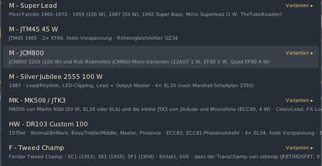

Modelle
Von Marshall bis Mesa
Jede Anlage als vollständige Schaltung: Vorstufe, Klangregelung, Phasenumkehr, Endstufe mit Ausgangsübertrager, Netzteil und reaktiver Boxlast – plus die Röhren der Originalbesetzung. Der Info-Knopf im Plugin zeigt zu jedem Modell Geschichte, Vorbild und die aus den aktuellen Bauteilen berechnete Ausgangsleistung.

Marshall Plexi · klassisch
Micro Superlead
1 W
Plexi-Vorstufe mit 12AU7-Mini-Endstufe (TheTubeRoaster, 2021).
Super Lead
1959 · 100 W
Halbleiter-Gleichrichter, 4× EL34 in der Endstufe.
Super Lead
1987 · 50 W
Halbleiter-Gleichrichter, 2× EL34 in der Endstufe.
Super Lead
1992 · Super Bass
Spätere Plexi-Variante mit Bass-Ausrichtung.
Marshall JCM-Serie
JTM45
45 W
1965 – 2× KT66, feste Vorspannung, Röhrengleichrichter GZ34; der klassische Vorläufer der JCM-Reihe.
JCM800 2203
100 W
Kaskade mit „Cold Clipper“, Master Volume, Eingänge High/Low.
JCM800 Micro (Rob Robinette)
1 W · 2 W · 4 W
JCM800-Vorstufe mit Kleinleistungs-Endstufe in drei Varianten: 12AU7 1 W, EF80 2 W, Quad EF80 4 W.
Silver Jubilee 2555
100 W
Lead / Rhythm / Rhythm Clip per Relais, LED-Clipping, Lead- und Output-Master Volume.
MK – MK5011 / JTK3
MK5011 · JTK3
MK5011 von Martin Kidd (50 W, EL34 oder 6L6) und die kleine JTK3.
Hiwatt britisch · warm
DR103 Custom
100 W
Die „British Warmth“-Anlage – als vollständige Schaltung, von der Vorstufe bis zur Endstufe.
Fender Tweed · Silverface · Brownface
Tweed Champ
SC1 · SE1 · 5F1
Fender Tweed Champ – SC1 (1953), SE1 (1955), 5F1 (1958); Eintakt mit 6V6.
Tweed Princeton SC2
1953 · Wide Panel
6SC7 in zwei Stufen, Volume/Ton – 1× 6V6-Eintakt mit Kathodenautomatik.
Tweed Deluxe
Tweed 1955–1960
Der kleine Deluxe in Tweed-Ausführung – vom Eingang bis zur Endstufe nachgebaut.
Tweed Bassman
5A6 · 5B6 · 5F6-A
Fender Tweed Bassman – 5A6 (1952), 5B6 (1953), 5F6-A (1958); der große Vollröhren-Klassiker.
Tweed Bandmaster 5E7
1955 · Narrow Panel
12AX7-Eingang, Treble/Bass, Presence – 2× 6L6G mit fester Vorspannung.
Silverface Deluxe Reverb
A1172
Fender Deluxe Reverb A1172 (Silverface) – eigene Schaltung.
Brownface Twin
6G8 · 1960
Normal + Vibrato (Harmonic Vibrato), Treble/Bass je Kanal, Presence.
Tweed Tremolux 5G9
1957–1960
Instrument/Mikrofon, Treble, Tremolo (Speed und Depth) – 2× 6V6.
Dumble
Overdrive Special
50 W / 100 W
Dumble Overdrive Special – 1970er 50 W / 100 W (6L6), 1997 (EL34).
Diezel
V4H
100 W
Die V4H mit ihrer bekannten Endstufe – hier in 100 W.
Mesa / Boogie
Dual Rectifier
100 W
Die „Recto“-Endstufe – bekannt für ihre Kompression und den hohen, satten Gain.
Pedale eigene Schaltung, nicht Preset
I – TS808
Tube Screamer
Eingangspuffer, Kappstufe und Klang- und Pegelstufe – mit einer eigenen Schaltungsansicht.
EQ-Pedal
3-Band
Klangregel-Pedal mit eigener Ansicht – seit Version 1.54.0.
Alle Namen beschreiben nur die nachgebauten Schaltungen; sie sind Marken ihrer jeweiligen Inhaber (Marshall, Fender, Hiwatt, Dumble, Diezel, Mesa u. a.) und dieses Projekt steht in keiner Verbindung zu ihnen.